The national Senate is formed of 250 members, divided into 12 geographical constituencies based on either population or the size of the electorate. On this page, the results from each UK General Election between 1955-2019 using the proposed system are shown, as well as the regional breakdown in table format, an arch diagram of the parliament, and some comment based on historical context.
The below diagram shows every election from 1955-2019 and the notional proposed senate results.
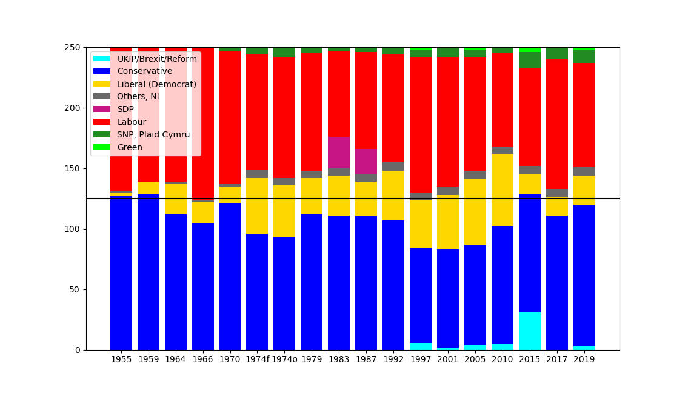
Party colour key:
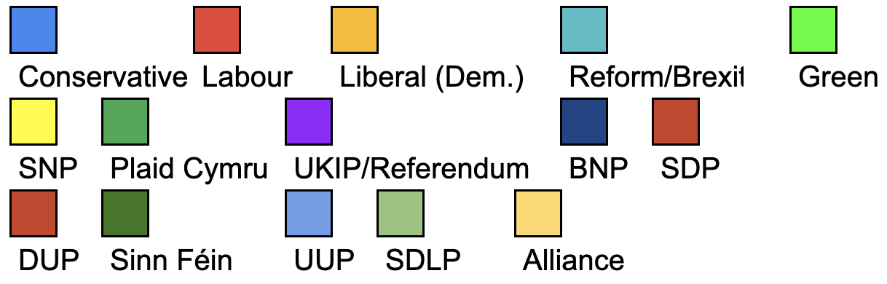
Region key: (SC= Scotland), (NE = North East England), (NW= North West England), (YH = Yorkshire and the Humber), (CY = Wales), (WM = West Midlands), (EM = East Midlands), (EA = East of England), (SW = South West England), (LD = London), (SE = South East England), (NI = Northern Ireland)
Now, let's have a look at each election in detail...
2019
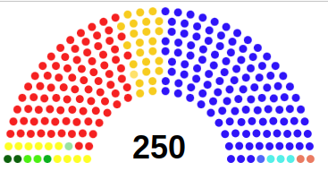
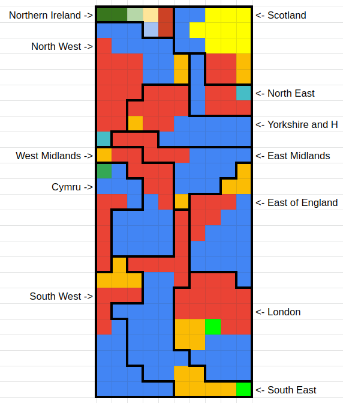
| GB: | CON | LAB | LIB | SNP/PC | Grn | Brx | Oth | TOT |
|---|---|---|---|---|---|---|---|---|
| SC | 5 | 4 | 2 | 10 | 0 | 0 | 0 | 21 |
| NE | 4 | 5 | 0 | 0 | 0 | 1 | 0 | 10 |
| NW | 11 | 14 | 2 | 0 | 0 | 1 | 0 | 28 |
| YH | 10 | 9 | 1 | 0 | 0 | 1 | 0 | 21 |
| CY | 5 | 6 | 0 | 1 | 0 | 0 | 0 | 12 |
| WM | 13 | 8 | 1 | 0 | 0 | 0 | 0 | 22 |
| EM | 11 | 6 | 1 | 0 | 0 | 0 | 0 | 18 |
| EA | 15 | 6 | 3 | 0 | 0 | 0 | 0 | 24 |
| SW | 13 | 5 | 4 | 0 | 0 | 0 | 0 | 22 |
| LD | 10 | 15 | 4 | 0 | 1 | 0 | 0 | 30 |
| SE | 20 | 8 | 6 | 0 | 1 | 0 | 0 | 35 |
| NI: | UUP | SDLP | DUP | SF | Grn | All | Oth | TOT |
| NI | 1 | 1 | 2 | 2 | 0 | 1 | 0 | 7 |
| TOT | 117 | 86 | 24 | 11 | 2 | 3 | 0 | 250 |
Back in reality, we saw Boris Johnson win his first national contest in a landslide in 2019 - winning 56% of the seats with 43% of the vote. In this system, the Conservatives would have remained the largest party but without a majority (a more proportional 46% of the seats).
Maybe the Liberal Democrats would have agreed to another more moderate coalition? After recovering some of their lost vote share in the south of England, their much more proportional 9.6% of the seats from 7.4% of the popular vote would have made them kingmakers in this scenario. In the current House of Commons, their vote share only earned them 1.4% of the seats - no wonder the Liberal Democrats are long time advocates of proportional representaion.
Elsewhere, the SNP would have won just under half of the seats in Scotland - directly proportional with their 45% of Scottish votes. The minor national parties such as Reform and the Green Party also pick up a few seats, but only had a small vote share this time.
Below, a look at the real results for comparsion:
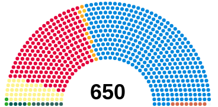
2017
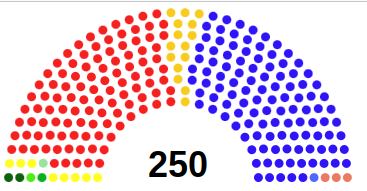
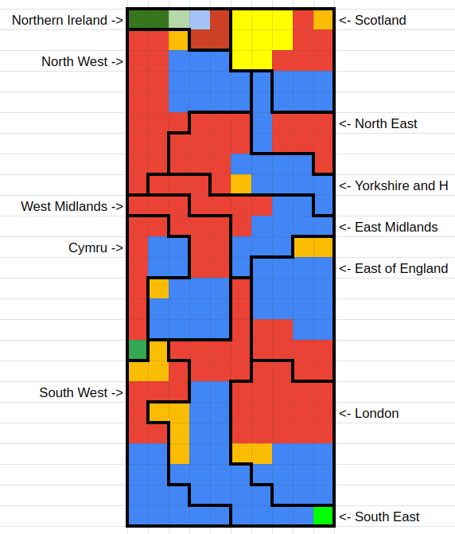
| GB: | CON | LAB | LIB | SNP/PC | Grn | Brx | Oth | TOT |
|---|---|---|---|---|---|---|---|---|
| SC | 6 | 6 | 1 | 8 | 0 | 0 | 0 | 21 |
| NE | 4 | 7 | 0 | 0 | 0 | 0 | 0 | 11 |
| NW | 11 | 16 | 1 | 0 | 0 | 0 | 0 | 28 |
| YH | 9 | 11 | 1 | 0 | 0 | 0 | 0 | 21 |
| CY | 4 | 7 | 0 | 1 | 0 | 0 | 0 | 12 |
| WM | 11 | 10 | 1 | 0 | 0 | 0 | 0 | 22 |
| EM | 10 | 8 | 0 | 0 | 0 | 0 | 0 | 18 |
| EA | 14 | 8 | 2 | 0 | 0 | 0 | 0 | 24 |
| SW | 12 | 7 | 3 | 0 | 0 | 0 | 0 | 22 |
| LD | 10 | 17 | 2 | 0 | 0 | 0 | 0 | 29 |
| SE | 20 | 10 | 4 | 0 | 1 | 0 | 0 | 35 |
| NI: | UUP | SDLP | DUP | SF | Grn | All | Oth | TOT |
| NI | 1 | 1 | 3 | 2 | 0 | 0 | 0 | 7 |
| TOT | 111 | 107 | 15 | 9 | 1 | 0 | 0 |
This election seemed to centre on one issue only: Brexit. Theresa May intended on increasing a Tory majority she inherited from David Cameron, who had resigned a year earlier after losing the argument with the British public on the merits of remaining in the European Union.
After calling this election with the intention of increasing their majority, the Conservatives were not successful. They remained the largest party with no majority, and limped on with the support of the Democratic Unionist Party's confidence and supply.
This model's results and the reality are not too different, with the real election being much more proportional than other contemporary elections. Voters tended to stick to the two major parties and their alternative plans on implementing Brexit.
The main difference in this scenario is that both major parties could form a majority coaltion with the Liberal Democrats' support. The Liberal Democrats were, as they often are, the biggest losers of first-past-the-post voting - winning only 1.8% of the seats with 7.4% of the vote. In this scenario, they win 6% of the seats.
Below, a look at the real results for comparsion:
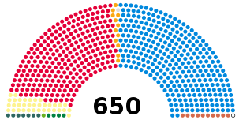
2015
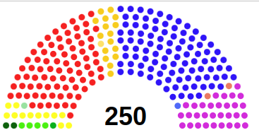
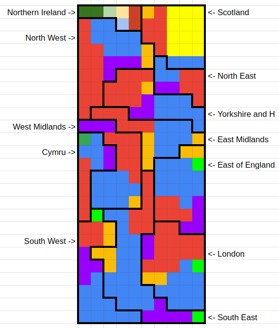
| GB: | CON | LAB | LIB | SNP/PC | Grn | UKIP | Oth | TOT |
|---|---|---|---|---|---|---|---|---|
| SC | 3 | 6 | 1 | 12 | 0 | 0 | 0 | 22 |
| NE | 3 | 5 | 0 | 0 | 0 | 2 | 0 | 10 |
| NW | 9 | 13 | 2 | 0 | 0 | 4 | 0 | 28 |
| YH | 8 | 9 | 1 | 0 | 0 | 3 | 0 | 21 |
| CY | 4 | 5 | 0 | 1 | 0 | 2 | 0 | 12 |
| WM | 10 | 8 | 1 | 0 | 0 | 3 | 0 | 22 |
| EM | 8 | 6 | 1 | 0 | 0 | 3 | 0 | 18 |
| EA | 12 | 5 | 2 | 0 | 1 | 4 | 0 | 24 |
| SW | 11 | 4 | 3 | 0 | 1 | 3 | 0 | 22 |
| LD | 11 | 13 | 2 | 0 | 1 | 2 | 0 | 29 |
| SE | 19 | 7 | 3 | 0 | 1 | 5 | 0 | 35 |
| NI: | UUP | SDLP | DUP | SF | Grn | All | Oth | TOT |
| NI | 1 | 1 | 2 | 2 | 0 | 1 | 0 | 7 |
| TOT | 98 | 81 | 16 | 13 | 4 | 31 | 0 | 250 |
These modelled results show the wave of Eurosceptic sentiment breaking over the UK back in 2015. UKIP gain 31 seats, or a very proportional 12.4% of the total in this system with 12.6% of the popular vote. This includes almost nationwide support, with representation in all regions except Scotland and Northern Ireland. Like them or not, it does seem fair to have almost four million voters' voices being heard and gain a fairer share of representation in parliament. In reality, this vote share in First-past-the-Post resulted in one seat (0.2%) at Westminster.
This was, as anticipated, the breakthrough election for a number of smaller parties as well as UKIP. The Green Party also gained a solitary seat, held now for every election since 2010. In this system, the Greens would gain representation outside of the South East of England for the first time, and have a more proportional 1.6% of the seats with 3.8% of the vote (rather than 0.2%). Would these parties' support continued to grow if voters had their votes count in 2015?
In Scotland, the context of this election was markedly different. It was held less than a year after the 2014 Independence Referendum. With almost exactly half of the popular vote, the Scottish National Party won 95% of the seats - that is 56 seats at Westminster, with one each for Labour, the Lib Dems and the Conservatives. This landslide shows one of the possible side effects of First-past-the Post voting. If one party can corner one specific demographic, pluralities of 35-40% in every seat can gain a party an enormous majority.
Arch diagram
In the real world, with a nationwide popular vote of just 36.8%, the Conservatives pulled off a surprise majority (51% of Westminster seats) where it was expected that the Conservative-Liberal Democrat coalition of 2010 would continue. David Cameron instead decided to govern alone, with Liberal Democrat representation in parliament almost disappearing; they again suffered from the system with 1.2% of seats with 7.9% of the vote.
2010
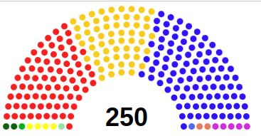
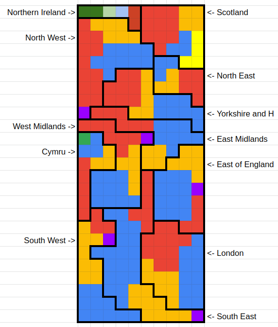
| GB: | CON | LAB | LIB | SNP/PC | Grn | Brx | Oth | TOT |
|---|---|---|---|---|---|---|---|---|
| SC | 3 | 10 | 4 | 4 | 0 | 0 | 0 | 21 |
| NE | 3 | 5 | 3 | 0 | 0 | 0 | 0 | 11 |
| NW | 10 | 12 | 6 | 0 | 0 | 1 | 0 | 29 |
| YH | 8 | 8 | 5 | 0 | 0 | 0 | 0 | 21 |
| CY | 3 | 5 | 3 | 1 | 0 | 0 | 0 | 12 |
| WM | 10 | 7 | 5 | 0 | 0 | 1 | 0 | 23 |
| EM | 8 | 6 | 4 | 0 | 0 | 0 | 0 | 18 |
| EA | 12 | 4 | 6 | 0 | 0 | 1 | 0 | 23 |
| SW | 10 | 3 | 8 | 0 | 0 | 1 | 0 | 22 |
| LD | 11 | 11 | 7 | 0 | 0 | 0 | 0 | 29 |
| SE | 19 | 6 | 9 | 0 | 0 | 1 | 0 | 35 |
| NI: | UUP | SDLP | DUP | SF | Grn | All | Oth | TOT |
| NI | 1 | 1 | 2 | 2 | 0 | 0 | 0 | 7 |
| TOT | 97 | 77 | 60 | 5 | 0 | 5 | 0 | 250 |
A more detailed description of the results and historical context is upcoming...
2005
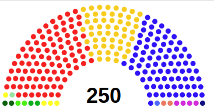
A more detailed description of the results and historical context is upcoming...
2001
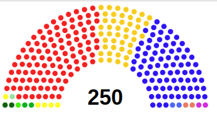
A more detailed description of the results and historical context is upcoming...
1997
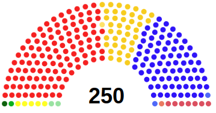
A more detailed description of the results and historical context is upcoming...
1992
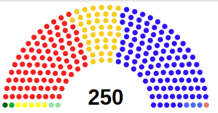
A more detailed description of the results and historical context is upcoming...
A more detailed description of the results and historical context is upcoming...
1983
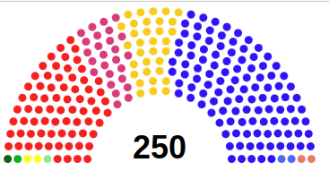
A more detailed description of the results and historical context is upcoming...
1979
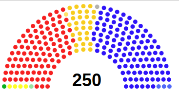
A more detailed description of the results and historical context is upcoming...
1974(Oct.)
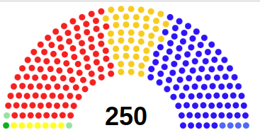
A more detailed description of the results and historical context is upcoming...
1974(Feb.)
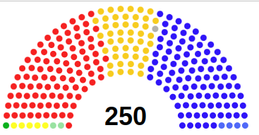
A more detailed description of the results and historical context is upcoming...
1970
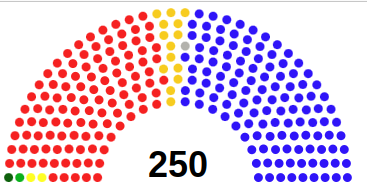
A more detailed description of the results and historical context is upcoming...
1966
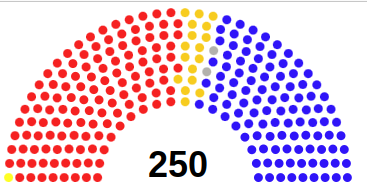
A more detailed description of the results and historical context is upcoming...
1964
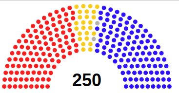
A more detailed description of the results and historical context is upcoming...
1959
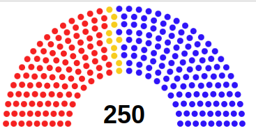
A more detailed description of the results and historical context is upcoming...
1955
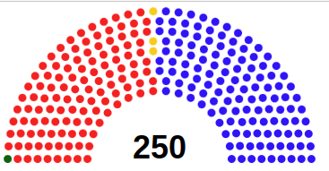
A more detailed description of the results and historical context is upcoming...